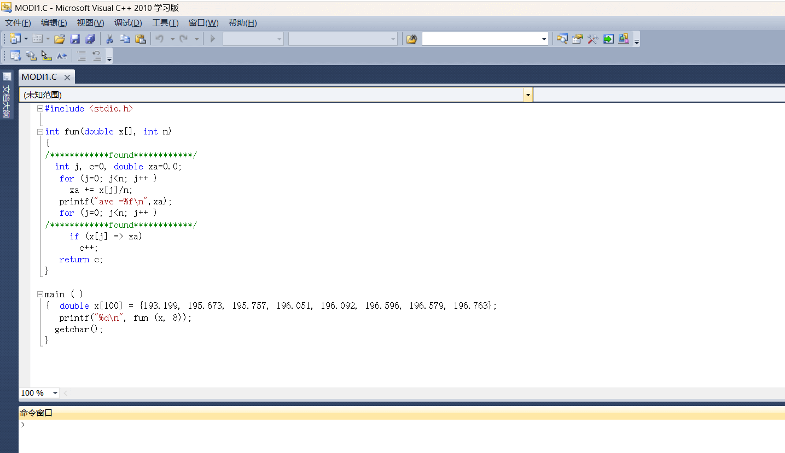

计算机二级考试安装
安装包来源于网络，本页面只提供教程，教程具有一定时效性和系统环境差异。
下载并解压压缩包
*如果出现如下问题。点击右下角的Windows安全中心。进入Windows安全中心，按照图片操作。然后在点击重试。
*压缩包内有破解文件，解压后会被杀毒软件识别然后直接删除掉。（遇到不信任的文件一定不要运行）
压缩包内容如下

打开 二级C语言 24年3月.exe 文件，点击下一步
*没展示的页面默认无修改，直接下一步
选择想要安装的目录
*路径中不要带中文，后面会用到这个路径，请记住它
等待安装完成。
按照 使用说明.txt 文件进行操作
*使用说明.txt:将 dnlib.dll、UnblockRegdll_WYKB.exe 两个文件放入无忧考吧安装目录，提前退出（无忧考吧主程序）并运行UnblockRegdll_WYKB.exe文件，点击Patch，双击打开无忧考吧主程序，点击离线激活，按照UnblockRegdll_WYKB.exe内的说明获得激活码。
复制解压后文件中的如下2个文件到软件的安装目录中
运行 UnblockRegdll_WYKB.exe 文件，点击Patch按钮，等待一会。
运行主程序
*在桌面有图标，如下图，运行它即可
运行后如下图，复制产品ID
粘贴到下图位置
点击keygen，框内会生成激活码
复制激活码，到下图位置，点击激活产品。激活后如下
为了安全，破解完成后，删除刚刚复制到主程序中的2个文件，dnlib.dll和UnblockRegdll_WYKB.exe，当然一开始的解压文件也可以删除了。只留下一个压缩包用于备份就可以了。
演示效果
随便选择一个模块，如综合练习，选择一套题目，点击开始练习
做题界面如下,题目分为4个项目，我选择程序填空作为演示。点击程序填空，打开考生文件夹。
1.选择题2.程序填空3.程序修改4.程序设计
考试文件夹目录如下
进入modi1，可以看到MODI1.C文件，这个就是题目源文件，
因为我安装了vc++2010，我只需要打开modi1.sln 文件
打开后如下，只需要按照题目修改绿色区域的错误。
运行一下，看一下报错来修改语法错误，在按照题意修改逻辑错误。做法仁者见仁。只要能运行且满足题意。

保存关闭，选择右上角交卷。有显示成绩，说明成功。其他功能自己可以去尝试。
引用一篇vc++2010下载地址
1 | https://blog.csdn.net/m0_54780048/article/details/121660644 |